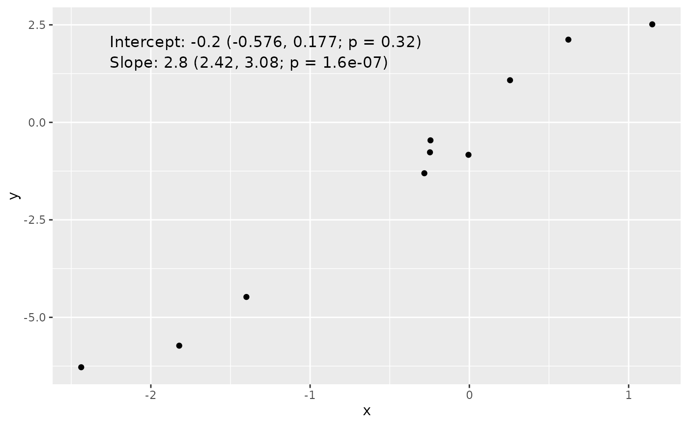
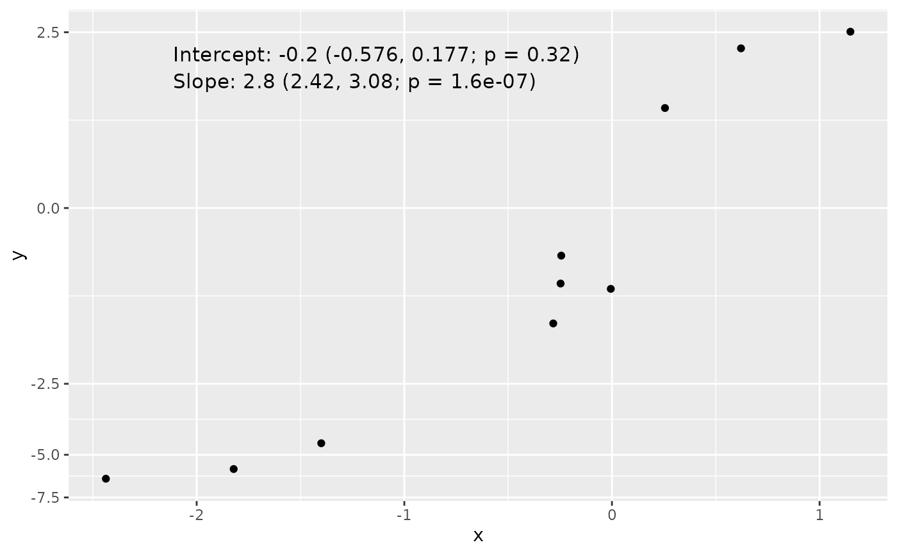

Adds a column of text to a ggplot object, overlaying the text at specified coordinates with customizable transformation, font size, and alignment.
Usage
add_text_column(
p,
x,
y,
trans = "identity",
text,
coord = c(0.05, 0.95),
skip = 0.06,
font_size = 4.2,
hjust = 0,
vjust = 0.5,
...
)Arguments
- p
ggplot object. Plot to have text overlaid onto.
- x, y
numeric vector. The min and max of these vectors specify the range of the plot.
- trans
character or trans object. Specifies the (visual) transformation applied to the y-axis. Internally passed to
get_trans. Default is "identity". Note that this transformation is NOT applied to the y-axis (the assumption is that it already has been or will be).- text
character vector. Each element specifies a line of text. Subsequent elements are plotted underneath (assuming skip >= 0).
- coord
numeric vector of length two. The elements specify the x- and y-coordinates, respectively, for the first line of text (i.e. the first element) of
text.c(0, 0)means the bottom-left corner andc(1, 1)the top-right. There is no problem with specifying values outside[0, 1], however. Default isc(0.05, 0.95)(i.e. towards top-left corner).- skip
numeric. Proportion of y-axis length to skip between rows. Default is 0.06.
- font_size
numeric. Font size. Default is 4.2 (roughly size 12).
- hjust, vjust
numeric. Passed to
hjustandvjustparameters ofgeom_text. Defaults are0and0.5, respectively.- ...
Additional parameters passed to
geom_text.
Examples
data_mod <- data.frame(x = rnorm(10))
data_mod$y <- data_mod$x * 3 + rnorm(10, sd = 0.5)
fit <- lm(y ~ x, data = data_mod)
coef_tbl <- coefficients(summary(fit))
results_vec <- c(
paste0(
"Intercept: ", signif(coef_tbl[1, "Estimate"][[1]], 2), " (",
signif(coef_tbl[1, 1][[1]] - 2 * coef_tbl[1, 2][[1]], 3), ", ",
signif(coef_tbl[1, 1][[1]] + 2 * coef_tbl[1, 2][[1]], 3), "; p = ",
signif(coef_tbl[1, 4][[1]], 3), ")"
),
paste0(
"Slope: ", signif(coef_tbl[2, "Estimate"][[1]], 2), " (",
signif(coef_tbl[2, 1][[1]] - 2 * coef_tbl[2, 2][[1]], 3), ", ",
signif(coef_tbl[2, 1][[1]] + 2 * coef_tbl[2, 2][[1]], 3), "; p = ",
signif(coef_tbl[2, 4][[1]], 3), ")"
)
)
library(ggplot2)
library(UtilsGGSV)
p <- ggplot(data_mod, aes(x = x, y = y)) + geom_point()
add_text_column(
p = p,
x = data_mod$x,
y = data_mod$y,
text = results_vec
)

# Works even if y-axis is transformed
p <- p + scale_y_continuous(trans = get_trans("asinh"))
add_text_column(
p = p,
x = data_mod$x,
y = data_mod$y,
text = results_vec,
trans = "asinh"
)
